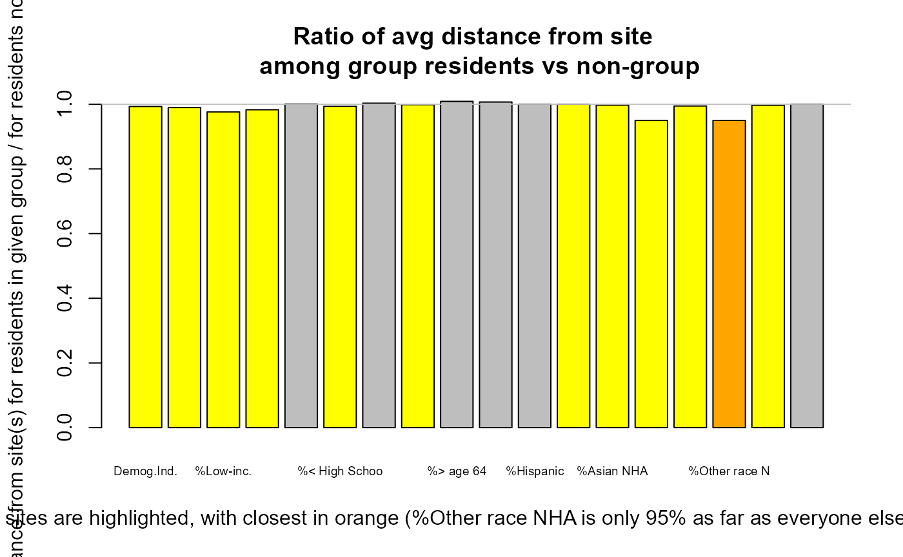
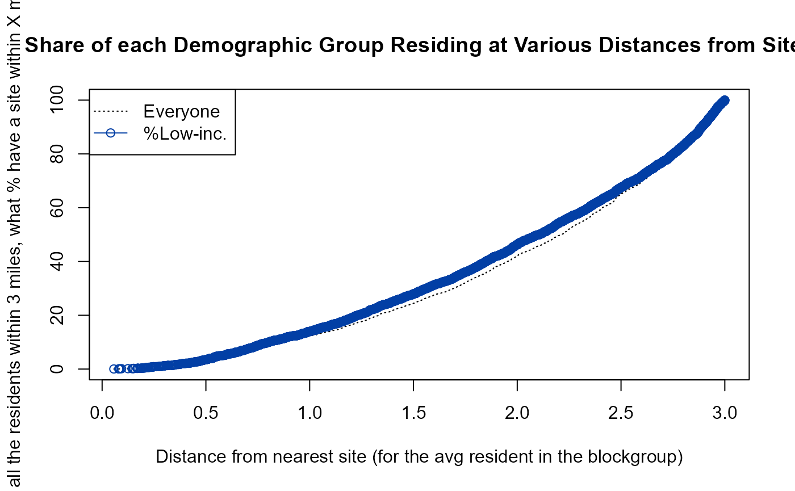

Key Functions
run_app()to launch the web app locally (to run in RStudio on a single computer rather than on a server)ejamit()provides most results in just one function, and they can be viewed usingejam2report()andejam2excel(). Sample input toejamit()is intestpoints_10and sample output is intestoutput_ejamit_10pts_1miles.ejamit()especially relies ongetblocksnearby()anddoaggregate():getblocksnearby()takes a set of points (e.g., facilities) and finds the Census blocks near each. Sample input is intestpoints_100, and sample output is intestoutput_getblocksnearby_10pts_1milesdoaggregate()takes the list of blocks near each point, joins it to blockgroup indicators like from EJScreen, and aggregates at each buffered point as well as for the overall set of unique blocks (residents). Sample input is intestoutput_getblocksnearby_10pts_1milesand sample output is intestoutput_doaggregate_10pts_1miles
Key groups of functions
The EJAM package reference manual has a complete list of documented functions, grouped by category. There are several categories of functions listed there:
- Key Functions
ejamit(),ejam2report(),ejam2excel(),ejam2map(),ejam2ratios() - Specify Points by Lat/Lon
- Specify Facilities by ID
- Specify Facility Type
- Specify Places by Shapefile
- Specify Counties, etc./FIPS tools
- Blocks, Distances, Residents - e.g.,
getblocksnearby() - Calculating and Aggregating
- Viewing Results (using the overall functions above)
- Test Data (if EJAM is installed, try
browseURL(system.file("testdata", package = "EJAM"))) - Utilities for finding URL or API info
- etc.
Also see data("EJAM") and see
?dataload_from_pins() and usastats,
statestats
POINTS & NEARBY RESIDENTS
EJAM offers a variety of ways to specify the places to be analyzed and compared. Once you specify some list of places, EJAM will analyze them as a whole (overall), and also individually so that you can compare places to each other.
Places analyzed and compared can be any of the following:
- Points, defining all residents within X miles of each point
- Polygons (from shapefiles), such as redlining zones, higher risk areas based on modeling, etc.
- Census Units such as Counties or other types of Census Units defined by FIPS code (e.g., Counties in one State)
Groups will be available in another type of analysis, not yet implemented. Groups will let you get statistics for each group, to compare categories of places. Whole groups of points/ polygons/ census areas will be treated as the units of analysis. This will allow you to define groups of points, for example, and get a summary for each group, such as residents near any of the facilities of one type. This enables comparison of categories of places, such as analyzing 3 types of facilities at once with results aggregated for each type, or comparing redlining zones grouped by grade, or comparing areas with some feature (poor air quality, or receiving grants, etc.) versus areas without that trait, all limited to one State or Region, for example.
To analyze points and the circular areas around each one, you can specify the points in two basic ways:
- A list of points defined by coordinates or by EPA ID numbers for each point
- All points that are the locations of EPA-regulated facilities of a certain type. The categories that can be used include the following:
- EPA Program (e.g., all greenhouse gas reporting facilities)
- Industry type, based on NAICS code (e.g., )
Specify points (where you want to center the circular buffers)
You can define locations as all residents within X miles of any one or more of the specified points, and you can define those points in a few ways. One way is to upload a table of coordinates – latitude and longitude for each point, one row per site, with columns called lat and lon (or some synonyms that work).
The simplest way to do that in the RStudio console is something like
x <- ejamit(), which prompts you to upload a spreadsheet
with lat lon columns, and asks you for the radius.
You can also specify a set of facilities by uploading their Registry
ID numbers in a table, or using other identifiers. For example, there is
a function latlon_from_programid() in the examples
below.
You can define circular buffers around a set of EPA-regulated facilities in a few other ways as well, such as by NAICS (or SIC) industry names or codes, EPA program covering the set of facilities (e.g., all greenhouse gas reporters), or a Clean Air Act MACT subpart.
by Industry (NAICS)
You can specify sites by NAICS, but it is important to note the FRS lacks NAICS info for many regulated facilities!
naics_from_any("paint and coating", children = T)
#> code n2 n3 n4 n5 n6 name
#> <num> <char> <char> <char> <char> <char> <char>
#> 1: 32551 32 325 3255 32551 32551 Paint and Coating Manufacturing
#> 2: 325510 32 325 3255 32551 325510 Paint and Coating Manufacturing
#> 3: 325510 32 325 3255 32551 325510 Paint and Coating Manufacturing
#> num_name
#> <char>
#> 1: 32551 - Paint and Coating Manufacturing
#> 2: 325510 - Paint and Coating Manufacturing
#> 3: 325510 - Paint and Coating Manufacturing
## note latlon_from_naics() requires the frs_by_naics dataset, which it tries to load on demand.
# head(latlon_from_naics(325510)) # has about 1,000 facilities
## All sectors with this phrase in their NAICS title
#
# x <- ejamit(frs_from_naics("paint and coating"), 1)See many more examples of working with NAICS, in a section below.
by Facility, using EPA Registry ID
# note frs_from_regid() and latlon_from_regid() require the frs dataset, which they try to load on demand.
frs_from_regid(c(110071293460, 110000333826))
## interactively upload file with table of REGISTRY_ID values
x <- latlon_from_regid(read_csv_or_xl()$REGISTRY_ID)
## and run through EJAM
y <- ejamit(latlon_from_regid(read_csv_or_xl()$REGISTRY_ID), radius = 1)
# # still debugging Island Areas validation here!by Facility, using EPA Program System ID
# latlon_from_programid() requires access to the frs_by_programid dataset, which it tries to load on demand.
if (exists("frs_by_programid")) {
latlon_from_programid(c("XJW000012435", "00768SRTRSROAD1"))
}by EPA Regulatory Program
# note latlon_from_programid() requires the frs and frs_by_programid datasets, which it tries to load on demand.
if (exists("frs_by_programid") && exists("frs")) {
## Map of over 10,000 facilities in FRS identified as in the E-Grid power plant database
pts <- latlon_from_program("EGRID")[, 1:4]
mapfast(pts)
## In just 1 State
pts[, ST := state_from_latlon(lat = lat, lon = lon)$ST]
mapfast(pts[ST == "TX", ], radius = 1)
## 10 largest programs (including State programs in the dataset)
head(cbind(Count.of.facilities = sort(table(frs_by_programid$program), decreasing = T)), 10)
## Largest Federal lists (many of the codes represent State databases)
epa_programs_counts <- frs_by_programid[, .N, by = "program"][order(N), ]
epa_programs_counts$fed = !grepl("^[A-Z]{2}[-]", as.vector(epa_programs_counts$program),1,3)
epa_programs_counts[fed == TRUE, ][order(-N), ][1:25, ]
}by MACT Subpart (hazardous air pollutant source category)
# note latlon_from_mactsubpart() requires the frs_by_mact dataset, which it tries to load on demand
if (exists("frs_by_mact")) {
# Search by name of category
mact_table[grepl("ethylene", mact_table$title, ignore.case = T), ]
eto <- rbind(
latlon_from_mactsubpart("O" ),
latlon_from_mactsubpart("WWWWW")
)
# Map the category
mapfast(eto)
# Browse the full list of categories
# mact_table[ , c("N", "subpart", "title")]
# The 10 largest categories
tail(mact_table[order(mact_table$N), c("N", "subpart", "title")], 10)
# Many facilities lack latitude longitude information in this database
nrow(latlon_from_mactsubpart("A", include_if_no_latlon = TRUE))
nrow(latlon_from_mactsubpart("A", include_if_no_latlon = FALSE))
head(latlon_from_mactsubpart("OOOO"), 2)
}Working with NAICS Codes (Industry Codes)
NAICS Codes to Map or Analyze Facilities in one Industrial Sector
NAICS/industry categories
naics_categories()
#> Also see https://www.naics.com/search/
#> [,1]
#> 11 - Agriculture, Forestry, Fishing and Hunting 11
#> 21 - Mining, Quarrying, and Oil and Gas Extraction 21
#> 22 - Utilities 22
#> 23 - Construction 23
#> 42 - Wholesale Trade 42
#> 51 - Information 51
#> 52 - Finance and Insurance 52
#> 53 - Real Estate and Rental and Leasing 53
#> 54 - Professional, Scientific, and Technical Services 54
#> 55 - Management of Companies and Enterprises 55
#> 56 - Administrative and Support and Waste Management and Remediation Services 56
#> 61 - Educational Services 61
#> 62 - Health Care and Social Assistance 62
#> 71 - Arts, Entertainment, and Recreation 71
#> 72 - Accommodation and Food Services 72
#> 81 - Other Services (except Public Administration) 81
#> 92 - Public Administration 92
#> 31 - Manufacturing 31
#> 32 - Manufacturing 32
#> 33 - Manufacturing 33
#> 44 - Retail Trade 44
#> 45 - Retail Trade 45
#> 48 - Transportation and Warehousing 48
#> 49 - Transportation and Warehousing 49
naics_from_any(naics_categories(3))[order(name),.(name,code)][1:10,]
#> Also see https://www.naics.com/search/
#> name
#> <char>
#> 1: Accommodation
#> 2: Administration of Economic Programs
#> 3: Administration of Environmental Quality Programs
#> 4: Administration of Housing Programs, Urban Planning, and Community Development
#> 5: Administration of Human Resource Programs
#> 6: Administrative and Support Services
#> 7: Air Transportation
#> 8: Ambulatory Health Care Services
#> 9: Amusement, Gambling, and Recreation Industries
#> 10: Animal Production and Aquaculture
#> code
#> <num>
#> 1: 721
#> 2: 926
#> 3: 924
#> 4: 925
#> 5: 923
#> 6: 561
#> 7: 481
#> 8: 621
#> 9: 713
#> 10: 112
naics_from_any(naics_categories(3))[order(code),.(code,name)][1:10,]
#> Also see https://www.naics.com/search/
#> code name
#> <num> <char>
#> 1: 111 Crop Production
#> 2: 112 Animal Production and Aquaculture
#> 3: 113 Forestry and Logging
#> 4: 114 Fishing, Hunting and Trapping
#> 5: 115 Support Activities for Agriculture and Forestry
#> 6: 211 Oil and Gas Extraction
#> 7: 212 Mining (except Oil and Gas)
#> 8: 213 Support Activities for Mining
#> 9: 221 Utilities
#> 10: 236 Construction of Buildings
# See a data table of facilities in one industry
dataload_from_pins("frs")
#> Connecting to Posit Connect 2024.01.0 at
#> <https://rstudio-connect.dmap-stage.aws.epa.gov>
#> Successfully connected to Posit Connect pins board.
#>
#> frs - is NOT in memory. Checking local disk... frs is NOT found locally on disk at ~/../Downloads/EJAMbigfiles/frs.arrow
#>
#> frs is NOT found locally on disk at ~/../Downloads/EJAMbigfiles/frs.arrow
#> trying to load frs from EJAM/frs.rda
#> Client error: (404) Not Found
#>
#> and could NOT download frs from DMAP AWS data commons
#> NULL
if (exists("frs")) {
industryword <- "pulp"
head( frs_from_naics(naics_from_any(industryword)$code)[,1:4] )
}Quick map of EPA-regulated facilities in one industrial category, which you can click on to see popup windows about sites.
# note frs_from_naics() requires the frs dataset, which it tries to load on demand.
dataload_from_pins("frs")
#> Connecting to Posit Connect 2024.01.0 at
#> <https://rstudio-connect.dmap-stage.aws.epa.gov>
#> Successfully connected to Posit Connect pins board.
#>
#> frs - is NOT in memory. Checking local disk... frs is NOT found locally on disk at ~/../Downloads/EJAMbigfiles/frs.arrow
#>
#> frs is NOT found locally on disk at ~/../Downloads/EJAMbigfiles/frs.arrow
#> trying to load frs from EJAM/frs.rda
#> Client error: (404) Not Found
#>
#> and could NOT download frs from DMAP AWS data commons
#> NULL
if (exists("frs")) {
mapfast(frs_from_naics("smelt")) # may be slow the 1st time, if it loads frs dataset
}(but note that this FRS dataset lacks NAICS for most facilities!)
Table of facilities in an industry, plus links to each facility in ECHO and EJScreen
industryword <- "chemical manuf"
# industryword <- "smelt"
if (exists("frs")) {
mysites <- frs_from_naics(industryword, children = FALSE)[,1:5]
regids <- mysites$REGISTRY_ID
link1 <- url_echo_facility_webpage(regids, as_html = T)
link2 <- url_ejscreen_report(lat = mysites$lat, lon = mysites$lon, radius = 3, as_html = T)
link3 <- url_ejscreenmap(lat = mysites$lat, lon = mysites$lon, as_html = T)
# # same:
# my_industry <- naics_from_any("chemical manuf",children = F)[,.(code,name)]
# mysites <- frs_from_naics(my_industry$code)[,1:5]
mysites <- cbind(`ECHO report` = link1,
`EJScreen Report` = link2, `EJScreen Map` = link3,
mysites)
caption = paste0(nrow(mysites), ' sites have NAICS matching "', industryword, '"')
if (nrow(mysites) > 1500) {mysites <- mysites[1:1500, ]} # >2k rows is too much for client-side DataTables
cat(caption,'\n')
print(
DT::datatable(
mysites[1:5, ],
escape = FALSE, rownames = FALSE,
caption = caption,
filter = "top"
)
)
}Map of facilities in an industry, plus popups with links to each facility in ECHO and EJScreen
mapfast(mysites)Search using industry codes or text in industry names
naics_from_any("plastics and rubber")
#> code n2 n3 n4 n5 n6
#> <num> <char> <char> <char> <char> <char>
#> 1: 326 32 326 326 326 326
#> name
#> <char>
#> 1: Plastics and Rubber Products Manufacturing
#> num_name
#> <char>
#> 1: 326 - Plastics and Rubber Products Manufacturing
naics_from_any(326)
#> code n2 n3 n4 n5 n6
#> <num> <char> <char> <char> <char> <char>
#> 1: 326 32 326 326 326 326
#> name
#> <char>
#> 1: Plastics and Rubber Products Manufacturing
#> num_name
#> <char>
#> 1: 326 - Plastics and Rubber Products Manufacturing
head(naics_from_any(326, children = T)[,.(code,name)])
#> code
#> <num>
#> 1: 326
#> 2: 3261
#> 3: 32611
#> 4: 326111
#> 5: 326112
#> 6: 326113
#> name
#> <char>
#> 1: Plastics and Rubber Products Manufacturing
#> 2: Plastics Product Manufacturing
#> 3: Plastics Packaging Materials and Unlaminated Film and Sheet Manufacturing
#> 4: Plastics Bag and Pouch Manufacturing
#> 5: Plastics Packaging Film and Sheet (including Laminated) Manufacturing
#> 6: Unlaminated Plastics Film and Sheet (except Packaging) Manufacturing
naics_from_any("pig")
#> code n2 n3 n4 n5 n6
#> <num> <char> <char> <char> <char> <char>
#> 1: 1122 11 112 1122 1122 1122
#> 2: 11221 11 112 1122 11221 11221
#> 3: 112210 11 112 1122 11221 112210
#> 4: 32513 32 325 3251 32513 32513
#> 5: 325130 32 325 3251 32513 325130
#> name
#> <char>
#> 1: Hog and Pig Farming
#> 2: Hog and Pig Farming
#> 3: Hog and Pig Farming
#> 4: Synthetic Dye and Pigment Manufacturing
#> 5: Synthetic Dye and Pigment Manufacturing
#> num_name
#> <char>
#> 1: 1122 - Hog and Pig Farming
#> 2: 11221 - Hog and Pig Farming
#> 3: 112210 - Hog and Pig Farming
#> 4: 32513 - Synthetic Dye and Pigment Manufacturing
#> 5: 325130 - Synthetic Dye and Pigment Manufacturing
naics_from_any("pig ") # space after g
#> code n2 n3 n4 n5 n6 name
#> <num> <char> <char> <char> <char> <char> <char>
#> 1: 1122 11 112 1122 1122 1122 Hog and Pig Farming
#> 2: 11221 11 112 1122 11221 11221 Hog and Pig Farming
#> 3: 112210 11 112 1122 11221 112210 Hog and Pig Farming
#> num_name
#> <char>
#> 1: 1122 - Hog and Pig Farming
#> 2: 11221 - Hog and Pig Farming
#> 3: 112210 - Hog and Pig Farming
# a OR b, a AND b, etc.
a = naics_from_any("plastics")
b = naics_from_any("rubber")
library(data.table)
data.table::fintersect(a,b)[,.(name,code)] # a AND b
#> name code
#> <char> <num>
#> 1: Plastics and Rubber Products Manufacturing 326
#> 2: Rubber and Plastics Hoses and Belting Manufacturing 32622
#> 3: Rubber and Plastics Hoses and Belting Manufacturing 326220
head(data.table::funion(a,b)[,.(name,code)]) # a OR b
#> name
#> <char>
#> 1: Plastics Material and Resin Manufacturing
#> 2: Plastics and Rubber Products Manufacturing
#> 3: Plastics Product Manufacturing
#> 4: Plastics Packaging Materials and Unlaminated Film and Sheet Manufacturing
#> 5: Plastics Bag and Pouch Manufacturing
#> 6: Plastics Packaging Film and Sheet (including Laminated) Manufacturing
#> code
#> <num>
#> 1: 325211
#> 2: 326
#> 3: 3261
#> 4: 32611
#> 5: 326111
#> 6: 326112
# naics_subcodes_from_code(funion(a,b)[,code])[,.(name,code)] # plus children
head(naics_from_any(funion(a,b)[,code], children = T)[,.(name,code)] ) # same
#> name
#> <char>
#> 1: Plastics and Rubber Products Manufacturing
#> 2: Plastics Product Manufacturing
#> 3: Plastics Packaging Materials and Unlaminated Film and Sheet Manufacturing
#> 4: Plastics Bag and Pouch Manufacturing
#> 5: Plastics Packaging Film and Sheet (including Laminated) Manufacturing
#> 6: Unlaminated Plastics Film and Sheet (except Packaging) Manufacturing
#> code
#> <num>
#> 1: 326
#> 2: 3261
#> 3: 32611
#> 4: 326111
#> 5: 326112
#> 6: 326113A NAICS code can have many “children” or subcategories under it
dataload_from_pins("frs")
#> Connecting to Posit Connect 2024.01.0 at
#> <https://rstudio-connect.dmap-stage.aws.epa.gov>
#> Successfully connected to Posit Connect pins board.
#>
#> frs - is NOT in memory. Checking local disk... frs is NOT found locally on disk at ~/../Downloads/EJAMbigfiles/frs.arrow
#>
#> frs is NOT found locally on disk at ~/../Downloads/EJAMbigfiles/frs.arrow
#> trying to load frs from EJAM/frs.rda
#> Client error: (404) Not Found
#>
#> and could NOT download frs from DMAP AWS data commons
#> NULL
if (exists("frs")) {
NROW(naics_from_any("chem"))
# about 20
NROW(naics_from_any("chem", children = T))
# >100
NROW(frs_from_naics(naics_from_any("chem")$code))
# a few thousand
NROW(frs_from_naics(naics_from_any("chem", children = T)$code))
# >10,000
}SHAPEFILES
Polygons in shapefiles as the places to compare
You can upload polygons in a shapefile, and use EJAM to analyze them. See the Shiny app.
See shapefile_from_any() and related functions:
shapefile_from_any()
shapefile_from_gdbzip()
shapefile_from_gdb()
shapefile_from_json()
shapefile_from_filepaths()
shapefile_from_folder()
shapefile_filepaths_from_folder()
shapefile_filepaths_valid()
shapefile_clean()
shapefile_from_sitepoints()
shape_buffered_from_shapefile()
shape_buffered_from_shapefile_points()
shp1 <- shapefile_from_gdbzip(system.file("testdata/shapes/portland.gdb.zip", package = "EJAM"))FIPS CODES
Counties as the places to compare
You can compare places defined by FIPS code, such as a group of US Counties.
Compare all Counties in a State, using EJAM indicators
# Get FIPS of each county in Delaware
mystate <- "Delaware"
cfips <- fips_counties_from_statename(mystate)
## You could launch a web browser tab for each of the counties,
## to see each of the County reports from EJScreen, like this:
#
# sapply(url_ejscreen_report(areaid = cfips), browseURL)
## Analyze EJ stats for each county in the State
x <- ejamit(fips = cfips) # radius not used
DT::datatable(x$results_bysite, escape = F)
table_tall_from_overall(x$results_overall)
t(x$results_bysite[ , c(
'ejam_uniq_id', 'pop', names_d_subgroups_ratio_to_state_avg), with = F])
mapfastej_counties(x$results_bysite)
cnames <- fips2countyname(x$results_bysite$ejam_uniq_id)
#cnames <- c("Kent County", "New Castle County", "Sussex County")
#cnames <- gsub(" County", "", cnames)
barplot(x$results_bysite$pctlowinc, names.arg = cnames,
main = paste0('% Low Income by County in ', mystate))
# Another example
mystate <- "Maryland"
vname <- "% low income"
xmd <- ejamit(fips = fips_counties_from_statename(mystate))
ggblanket::gg_col(data = xmd$results_bysite,
y = pctlowinc,
x = ejam_uniq_id,
title = paste0(vname, ' by County in ', mystate),
y_title = vname
)
mapfastej_counties(xmd$results_bysite, 'state.pctile.pctlowinc')EXPLORING RESULTS
The most striking findings (e.g., which group is most overrepresented?)
See examples above using ejam2report() but also you can check some key findings like this:
x <- testoutput_ejamit_1000pts_1miles
out <- x$results_bysite
out <- setDF(copy(out))
ratio_benchmarks <- c(1.01, 1.50, 2, 3, 5, 10)
ratiodata <- out[, names_d_ratio_to_state_avg]
findings <- count_sites_with_n_high_scores(ratiodata, quiet = TRUE) # long output to console !
tail(findings$text[findings$text != ""], 1) # the most extreme finding!
#> [1] "At 3% of these sites, at least 1 of the indicators is at least 5 times the statewide overall average."More summary findings
dimnames(findings)
#> NULL
findings$text[2]
#> [1] "At 95% of these sites, at least 1 of the indicators is at least 1.01 times the statewide overall average."
head(findings$stats[ , , 1], 15)
#> cut
#> count 1.01 2 5 10
#> 0 50 708 969 992
#> 1 162 160 25 2
#> 2 181 45 0 0
#> 3 110 32 0 0
#> 4 79 21 0 0
#> 5 70 11 0 0
#> 6 77 13 0 0
#> 7 82 4 0 0
#> 8 91 0 0 0
#> 9 88 0 0 0
#> 10 4 0 0 0
head(findings$stats[ , 1, ], 21)
#> stat
#> count count cum pct cum_pct
#> 0 50 994 5 100
#> 1 162 944 16 95
#> 2 181 782 18 79
#> 3 110 601 11 60
#> 4 79 491 8 49
#> 5 70 412 7 41
#> 6 77 342 8 34
#> 7 82 265 8 27
#> 8 91 183 9 18
#> 9 88 92 9 9
#> 10 4 4 0 0
x = findings$stats[ , 1, ]
x[x[, "cum_pct"] >= 50 & x[, "cum_pct"] <= 80, ]
#> stat
#> count count cum pct cum_pct
#> 2 181 782 18 79
#> 3 110 601 11 60
findings$stats[ 1, , ]
#> stat
#> cut count cum pct cum_pct
#> 1.01 50 994 5 100
#> 2 708 994 71 100
#> 5 969 994 97 100
#> 10 992 994 100 100Site by site detailed results in datatable format in RStudio viewer:
out2 <- testoutput_ejamit_100pts_1miles
DT::datatable(out2$results_bysite[1:5, ], escape = FALSE, rownames = FALSE)
# To see all 1,000 sites in table:
#DT::datatable(out2$results_bysite[1:1000, ], escape = FALSE, rownames = FALSE)Overall results for a few key indicators, as raw output in console:
out2 <- testoutput_ejamit_100pts_1miles
names(out2)
#> [1] "results_overall" "results_bysite"
#> [3] "results_bybg_people" "longnames"
#> [5] "count_of_blocks_near_multiple_sites" "results_summarized"
#> [7] "formatted"
cbind(overall = as.list( out2$results_overall[ , ..names_d]))
#> overall
#> Demog.Index 0.4375791
#> Demog.Index.Supp 0.1559613
#> pctlowinc 0.3273222
#> pctlingiso 0.07851435
#> pctunemployed 0.06273723
#> pctlths 0.132045
#> lowlifex 0.1791878
#> pctunder5 0.05773662
#> pctover64 0.1407173
#> pctmin 0.5478361
cbind(overall = as.list( out2$results_overall[ , ..names_d_subgroups]))
#> overall
#> pcthisp 0.2737942
#> pctnhba 0.1462381
#> pctnhaa 0.0866459
#> pctnhaiana 0.002500135
#> pctnhnhpia 0.001582896
#> pctnhotheralone 0.005025789
#> pctnhmulti 0.03204894
#> pctnhwa 0.4521639DETAILS OF BLOCKS NEAR ONE SITE
getblocksnearby() will find residents/blocks that are within specified distance
Less than 1 second for 100 sites, but a few seconds for 1,000 sites, or 500k / hour for this step
sitepoints <- data.table::copy(testpoints_100)
# or
# sitepoints <- testpoints_n(100,"block") # random points
radius <- 3
elapsed <- system.time({
sites2blocks <- getblocksnearby(
sitepoints = sitepoints,
radius = radius
)
}) # end of timed function
print(elapsed)
head(sites2blocks)doaggregate() will summarize indicators within each buffer and overall
# out <- doaggregate(testoutput_getblocksnearby_10pts_1miles)
sites2blocks <- data.table::copy(testoutput_getblocksnearby_10pts_1miles)
elapsed <- system.time({
out <- suppressWarnings(
doaggregate(sites2blocks = sites2blocks)
)
})
#> Inferring approximate radius is 1 miles, based on distances found.
print(elapsed)
#> user system elapsed
#> 0.30 0.06 0.86
names(out)
#> [1] "results_overall" "results_bysite"
#> [3] "results_bybg_people" "longnames"
#> [5] "count_of_blocks_near_multiple_sites"
dim(out$results_bysite)
#> [1] 9 287See indicators aggregated over all people across all sites
## view output of batch run aggregation ####
head(cbind(overall = as.list( out$results_overall)))
#> overall
#> ejam_uniq_id NA
#> pop 60740.3
#> lon NA
#> lat NA
#> ST NA
#> statename NA
## To see just some subset of indicators, like Environmental only:
cbind(overall = as.list( out$results_overall[ , ..names_e])); cat("\n")
#> overall
#> pm 8.033511
#> o3 60.62275
#> cancer 26.52724
#> resp 0.2887633
#> dpm 0.3634965
#> pctpre1960 0.4127978
#> traffic.score 179.1214
#> proximity.npl 0.3872596
#> proximity.rmp 0.5952604
#> proximity.tsdf 1.353144
#> proximity.npdes 0.01370324
#> ust 5.488647
#> rsei 6492.776
cbind(overall = as.list( out$results_overall[ , ..names_d])); cat("\n")
#> overall
#> Demog.Index 0.402214
#> Demog.Index.Supp 0.1772926
#> pctlowinc 0.3960105
#> pctlingiso 0.0681899
#> pctunemployed 0.05715225
#> pctlths 0.148745
#> lowlifex 0.2163654
#> pctunder5 0.06424071
#> pctover64 0.1083218
#> pctmin 0.4084175
cbind(overall = as.list( out$results_overall[ , ..names_d_subgroups])); cat("\n")
#> overall
#> pcthisp 0.2547057
#> pctnhba 0.08590507
#> pctnhaa 0.0296854
#> pctnhaiana 0.008840918
#> pctnhnhpia 1.481718e-05
#> pctnhotheralone 0.0009054944
#> pctnhmulti 0.02836008
#> pctnhwa 0.5915825
cbind(overall = as.list( out$results_overall[ , ..names_e_pctile])); cat("\n")
#> overall
#> pctile.pm 45
#> pctile.o3 46
#> pctile.cancer 5
#> pctile.resp 4
#> pctile.dpm 79
#> pctile.pctpre1960 67
#> pctile.traffic.score 72
#> pctile.proximity.npl 93
#> pctile.proximity.rmp 79
#> pctile.proximity.tsdf 66
#> pctile.proximity.npdes 70
#> pctile.ust 79
#> pctile.rsei 89
cbind(overall = as.list( out$results_overall[ , ..names_d_pctile])); cat("\n")
#> overall
#> pctile.Demog.Index 64
#> pctile.Demog.Index.Supp 72
#> pctile.pctlowinc 69
#> pctile.pctlingiso 80
#> pctile.pctunemployed 63
#> pctile.pctlths 71
#> pctile.lowlifex 70
#> pctile.pctunder5 64
#> pctile.pctover64 30
#> pctile.pctmin 59
# cbind(overall = as.list( out$results_overall[ , ..names_ej_pctile])); cat("\n")VISUALIZATION OF FINDINGS
Histogram of indicators distribution over all people across all sites
hist(out$results_bysite$pctile.traffic.score, 10, xlab = "Local traffic scores (expressed as a percentile)",
ylab = "count of sites in each bin, out of 1,000 sites", freq = TRUE,
main = "Actual distribution of scores nearby, as percentiles,
vs flat line = USA overall")
abline(h = nrow(out$results_bysite)/10)
Distance plots
Mean distance of each group
# plot_distance_mean_by_group(testoutput_ejamit_1000pts_1miles$results_bybg_people)
# larger radius reveals more information
y <- ejamit(testpoints_100, radius = 3)
#> Finding blocks nearby.
#> Analyzing 100 points, radius of 3 miles around each.
#> Aggregating at each buffer and overall.
#> Connecting to Posit Connect 2024.01.0 at
#> <https://rstudio-connect.dmap-stage.aws.epa.gov>
#> Successfully connected to Posit Connect pins board.
#>
#> bgej - is NOT in memory. Checking local disk... bgej is NOT found locally on disk at ~/../Downloads/EJAMbigfiles/bgej.arrow
#>
#> bgej is NOT found locally on disk at ~/../Downloads/EJAMbigfiles/bgej.arrow
#> trying to load bgej from EJAM/bgej.rda
#> Client error: (404) Not Found
#>
#> and could NOT download bgej from DMAP AWS data commons
plot_distance_mean_by_group(y$results_bybg_people) # or distance_mean_by_group() is a synonym
#> group nearest nearer ratio
#> Demog.Ind. Demog.Index FALSE TRUE 0.992
#> Suppl Demog.Ind. Demog.Index.Supp FALSE TRUE 0.991
#> %Low-inc. pctlowinc FALSE TRUE 0.976
#> %Limited English pctlingiso FALSE TRUE 0.984
#> %Unemployed pctunemployed FALSE FALSE 1.004
#> %< High School pctlths FALSE TRUE 0.995
#> %Low life expectancy lowlifex FALSE FALSE 1.003
#> %< age 5 pctunder5 FALSE FALSE 1.003
#> %> age 64 pctover64 FALSE FALSE 1.010
#> %POC pctmin FALSE FALSE 1.004
#> %Hispanic pcthisp FALSE FALSE 1.000
#> %Black NHA pctnhba FALSE FALSE 1.000
#> %Asian NHA pctnhaa FALSE TRUE 0.998
#> %AmerIndian/AK NHA pctnhaiana TRUE TRUE 0.955
#> %Hawaiian/PI NHA pctnhnhpia FALSE FALSE 1.009
#> %Other race NHA pctnhotheralone FALSE TRUE 0.974
#> %multirace NH pctnhmulti FALSE TRUE 0.999
#> %White NHA pctnhwa FALSE FALSE 1.000
#> avg_distance_for_group avg_distance_for_nongroup
#> Demog.Ind. 1.99 2.00
#> Suppl Demog.Ind. 1.98 2.00
#> %Low-inc. 1.96 2.01
#> %Limited English 1.97 2.00
#> %Unemployed 2.00 2.00
#> %< High School 1.99 2.00
#> %Low life expectancy 2.01 2.00
#> %< age 5 2.00 2.00
#> %> age 64 2.01 1.99
#> %POC 2.00 1.99
#> %Hispanic 1.99 1.99
#> %Black NHA 1.99 1.99
#> %Asian NHA 2.04 2.04
#> %AmerIndian/AK NHA 1.93 2.02
#> %Hawaiian/PI NHA 2.01 1.99
#> %Other race NHA 1.97 2.02
#> %multirace NH 2.00 2.00
#> %White NHA 1.99 1.99
print(distance_by_group(
y$results_bybg_people,
demogvarname = 'pctlowinc', demoglabel = 'Low Income'))
#> group nearest nearer ratio avg_distance_for_group
#> Low Income pctlowinc TRUE TRUE 0.976 1.96
#> avg_distance_for_nongroup
#> Low Income 2.01
distance_by_group_plot(
y$results_bybg_people,
demogvarname = 'pctlowinc', demoglabel = 'Low Income')
Map blocks near 1 site
x = plotblocksnearby(testpoints_10[1,], radius = 3, returnmap = FALSE)
# returnmap= TRUE is to actually return the leaflet map
# Use weighting="frs" in testpoints_n() to pick a random FRS facility's blockPOPULATION DENSITY - AVG SITE VS AVG RESIDENT
Sites vary widely in count of blocks nearby, depending on population density
- what blocks are near each site
- how far are they
- how many blocks are typically near a given site (population density varies)
- how many sites are near a block (residents with > 1 site nearby)
out <- testoutput_ejamit_100pts_1miles
cat(" ", popshare_p_lives_at_what_pct(out$results_bysite$pop, p = 0.50, astext = TRUE), "\n")
#> 6% of places account for 50% of the total population (approx.)
cat(" ", popshare_at_top_n(out$results_bysite$pop, c(1, 5, 10), astext = TRUE), "\n\n")
#> 1, 5, 10 places account for 18%, 46%, 58% of the total population
## Also could use this example intermediate step dataset
## of n sites, with thousands of nearby blocks:
# sites2blocks <- data.table::copy(testoutput_getblocksnearby_10pts_1miles)
radius <- 3
sitepoints <- data.table::copy(testpoints_100)
sites2blocks <- getblocksnearby(sitepoints, radius, quadtree = localtree)
names(sites2blocks)
getblocks_summarize_blocks_per_site(sites2blocks)
# print() shows more info returned invisibly
getblocks_diagnostics(sites2blocks)
# Use data.table package here
library(data.table)
# Very few blocks are within a radius of 1/4 mile.
# Hundreds are often within 1 mile, but sometimes there are
# only a handful or even zero.
s2b_stats <- sites2blocks[ , .(
avgDistance = round(mean(distance), 2),
blocksfound = .N,
blocks_within_1mile = sum(distance <= 1),
blocks_within_0.75 = sum(distance <= 0.75),
blocks_within_0.25 = sum(distance <= 0.25)
), by = 'ejam_uniq_id'][order(blocksfound), ]
setorder(s2b_stats, ejam_uniq_id)
head(s2b_stats)
# CDF of how many blocks are nearby a site
plot(sort(s2b_stats$blocks_within_1mile),
main = "How many blocks are near each facility?",
ylab = "# of blocks (whose internal point is) within 1 mile of each site",
xlab = paste0(nrow(s2b_stats)," facilities ranked by # of blocks nearby"))
abline(h = quantile(s2b_stats$blocks_within_1mile, probs = (0:4) * 0.25))
abline(h = mean(s2b_stats$blocks_within_1mile), col = "red")
# Histogram of how many blocks are nearby a site
hist(sites2blocks[,.N, by = "ejam_uniq_id"][, N], 20,
xlab = "How many blocks are nearby?",
ylab = "Frequency (# of sites)",
main = "A given site may have zero to hundreds of blocks nearby",
sub = "A typical site in this example has about 100 blocks nearby")
DT::datatable(s2b_stats, rownames = FALSE)
# more summaries showing there may be only 1 block or hundreds within 1 mile
quantile(s2b_stats$blocks_within_1mile, probs = (0:4) * 0.25)
t(summary(s2b_stats))
# map the sites with popups about how many blocks were found near each
if (!('ejam_uniq_id' %in% names(sitepoints))) {sitepoints$ejam_uniq_id <- seq.int(length.out = NROW(sitepoints))}
s2b_stats <- merge(sitepoints, s2b_stats, by = "ejam_uniq_id")
mapfast(s2b_stats, radius = radius)
# Some places have very few -- if any -- blocks within 1 mile
tail(s2b_stats[order(s2b_stats$blocks_within_1mile, decreasing = T),
c('ejam_uniq_id', 'blocks_within_1mile')], 3)
# Some places have hundreds nearby: a 1 mile radius is huge
# within a dense urban area
head(s2b_stats[order(s2b_stats$blocks_within_1mile, decreasing = T),
c('ejam_uniq_id', 'blocks_within_1mile')], 3)
densest <- s2b_stats$ejam_uniq_id[order(
s2b_stats$blocks_within_1mile, decreasing = T)][1]
plotblocksnearby(sitepoints = sitepoints[sitepoints$ejam_uniq_id == densest, ])
# Within a 1 mile radius, the blocks found tend to be about 2/3 of a mile from the site at the center.
summary(s2b_stats$avgDistance)